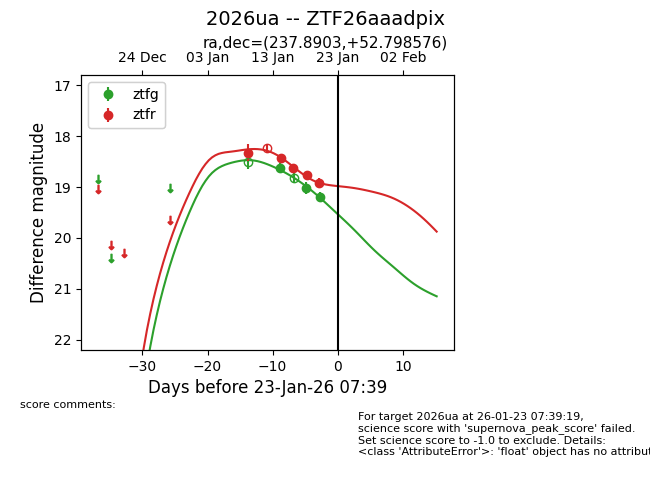
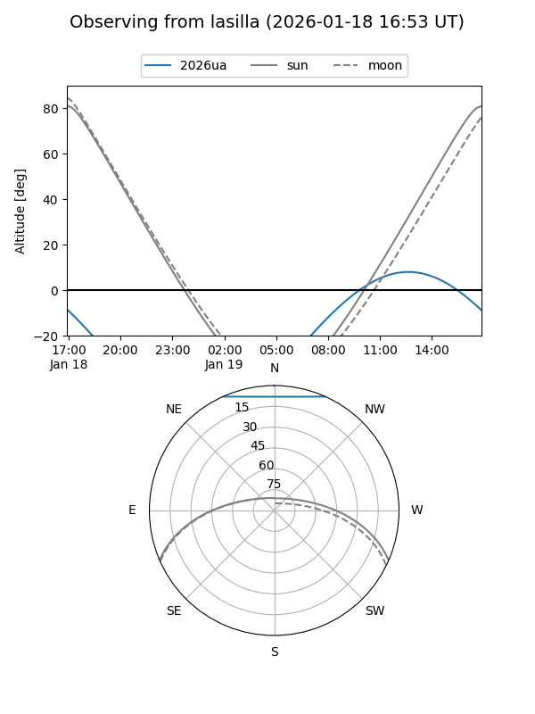
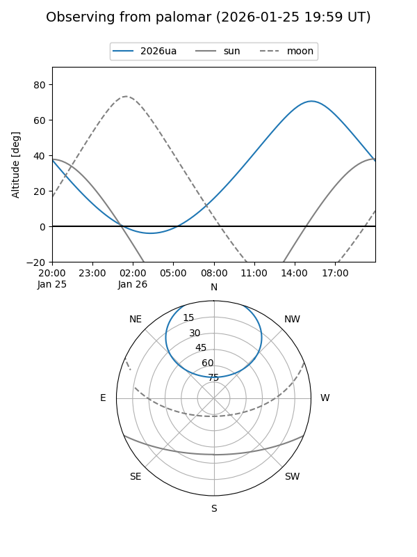
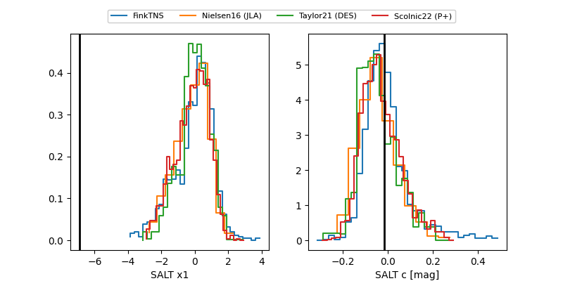

2026ua
Target 2026ua at 2026-01-22 20:31
Aliases and brokers:
FINK: link
Lasair: link
ALeRCE: link
TNS: link
YSE: link
alt names
ZTF26aaadpix (ztf,fink_ztf)
2026ua (tns,yse)
Coordinates:
equatorial (ra, dec) = 237.8903,+52.79858
equatorial (HMS+DMS) = 15:51:33.67,+52:47:54.87
galactic (l, b) = (83.1667,+48.02956)
Flags:
Photometry:
last ztfg=19.20, ztfr=18.92
3 ztfg, 5 ztfr detections
Lightcurve

Visibility


Additional plots
